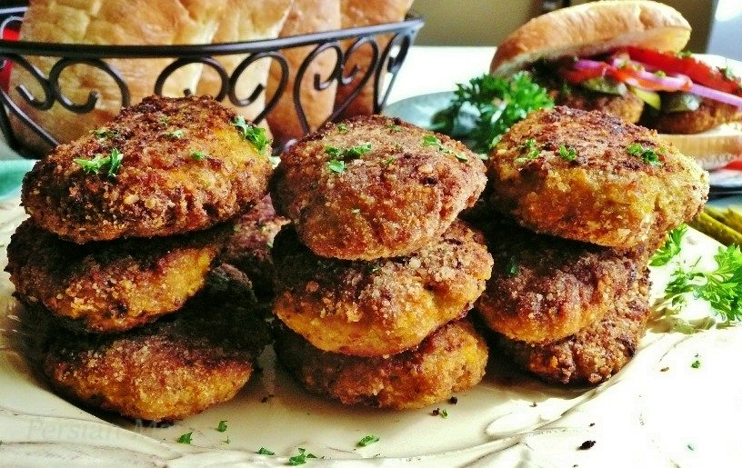

Home
Kotlet

These versatile pan-fried patties are made from a mixture of ground meat, eggs, and finely mashed (or riced) boiled potatoes.
Within the Persian culinary landscape, there is a family of pan-fried patties (meat-based as well as vegetarian), some of which have been around for a long time. Kotlets are relative newcomers to this family, as potatoes were not introduced to Iran until sometime between the late 18th and early 19th centuries.
In fact, the Persian word "kotlet" is a loanword based on the French word "côtelette," which had found its way into the Persian language shortly after European travelers began to explore Iran extensively in the early 19th century.
Ingredients:
- 1 pound ground beef
- 2 russet potato
- 1 onion
- 1 egg
- 3 tbsp. flour
- 1/2 tsp turmeric
- 1/2 tsp black pepper
- 1 tsp salt
- 4 tbsp vegetable oil
Steps:
- Grate the onion. Squeeze it very hard and dispose all the juice. (The juice will make the patties fall apart). Peel and grate the potato as well.
- Mix the grated onion with ground beef.
- Add the egg, flour and spices, using your hand, mix everything until well combined. The mixture is going to be very sticky.
- Heat the oil in a shallow pan over medium heat.
- Place a bowl of water near yourself, wet your hands, take about 2 tablespoons of the patty mixture, form into oval and fry it in the oil, about 5 minutes on each side until brown and cooked inside.
- Serve warm with tomatoes, fries and pickled cucumber.
Home